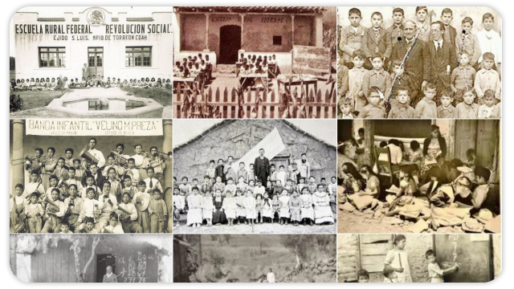

Pedagogía
Libros
Artículos
Eventos
Autores
Artículos

La Escuela Rural Mexicana
Aportación de la Revolución Mexicana a la pedagogía mundial.
Vicente García Rocha
Primera edición
Leer
Sobre el autor
Pedagogía 2022-2024
Todos los derechos reservados.